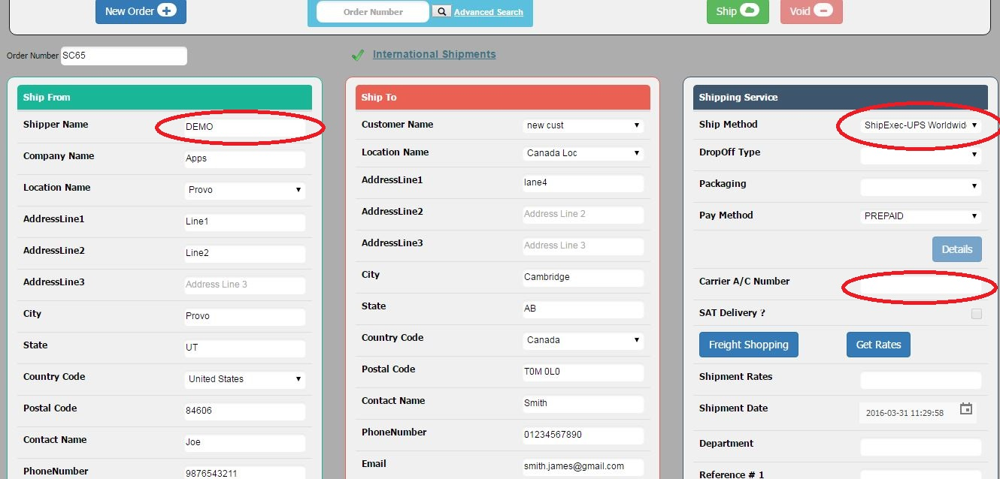
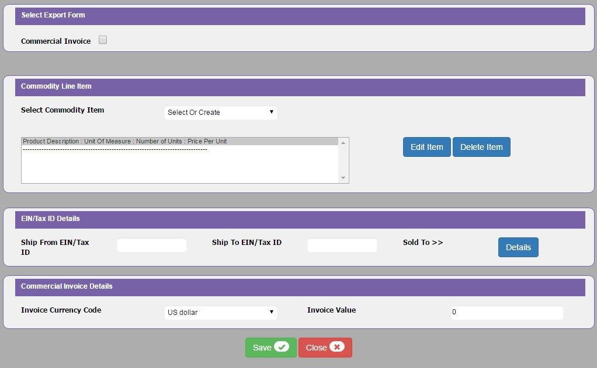

Once we click on the Shipping in the Index page, it navigates to the Ship Console Main page. If the admin configured Ship Exec for the selected ship from location, then the Shipper Name will be shown. And for the Ship Exec shipmethods there is no account number as shown in below screen.

Here, We got Shipper Name which is configured at Options page by Admin.
After selecting ship method click on International link then it will show international pop up as shown below:

It has all the information of international shipment like UPS Direct. For more information refer UPS International Shipments chapter.